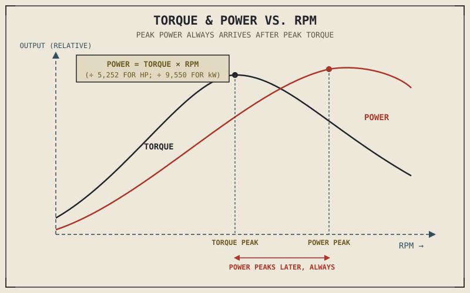

Every torque curve this book has gestured toward now has a strange, consistent property worth stating plainly before explaining why: peak power never happens at the same RPM as peak torque. Not sometimes — never, on any real engine. Peak power always arrives higher in the rev range than peak torque. This isn't a coincidence of engine design. It's forced by a mathematical relationship between the two that this chapter is finally going to make explicit.
Chapter 1.5 introduced torque and power as related-but-distinct vocabulary, and every chapter since has referenced one or the other without pinning down exactly how they connect. This chapter does that, and then uses the result to explain why a real torque curve has the humped shape it does — bringing together nearly everything Chapters 2.1 through 2.11 established about how an engine is built.
The Formula Chapter 1.5 Promised
Power is torque multiplied by rotational speed. That's the entire relationship, and everything else in this chapter follows from it. In the units usually printed on a spec sheet, horsepower equals torque in pound-feet multiplied by RPM, divided by a constant (5,252); in metric units, kilowatts equal torque in newton-metres multiplied by RPM, divided by a different constant (9,550). The constants exist purely to convert between unit systems — the underlying relationship is simply that power is torque acting at a given rotational speed.
This has an important consequence worth sitting with: torque and power aren't two independent things an engine happens to produce. If you know an engine's torque at every RPM across its range, its power at every RPM is already mathematically determined — there's nothing left to measure separately. Engineers designing an engine are, in the most literal sense, tuning the torque curve. The power curve is simply what that torque curve looks like once you account for how fast the engine is spinning at each point.
Why the Torque Curve Rises, Peaks, and Falls
A real torque curve isn't flat, and it isn't a straight line — it climbs from idle, reaches a peak somewhere in the engine's range, and tapers off again as RPM continues to climb toward redline. Chapter 2.3's volumetric efficiency explains this shape almost entirely on its own. At very low RPM, the engine has plenty of time to fill each cylinder between strokes, but the intake charge's velocity and the mixture's motion inside the chamber are both comparatively sluggish, so cylinders don't fill quite as effectively as they will a bit further up the rev range. As RPM climbs into the engine's mid-range, intake velocity increases, the tuned intake tract length from Chapter 2.3 and the camshaft's lift and duration from Chapter 2.7 begin working in the engine's favour, and volumetric efficiency — and therefore torque — reaches its peak.
Push RPM higher still, and the intake valve's open window, set by the camshaft duration Chapter 2.7 described, simply runs out of time to fill the cylinder as completely as it did lower down, no matter how well-tuned the intake tract is. Volumetric efficiency falls, and torque falls with it, even as the engine continues spinning faster. This rise-peak-fall shape isn't a flaw or a limitation engineers failed to solve — it's the direct signature of volumetric efficiency changing with RPM, which Chapter 2.3 already established is never constant across an engine's operating range.

A torque curve and power curve plotted together against RPM, showing torque rising, peaking, and falling while power continues climbing past the torque peak until its own, later peak, with the horsepower formula's constant relationship annotated between the two curves.
Why Peak Power Always Arrives After Peak Torque
Now the formula from earlier in this chapter explains something that otherwise looks like a strange rule with no obvious cause. Since power equals torque multiplied by RPM, power keeps climbing as long as RPM is increasing faster than torque is falling. Past the torque peak, torque begins declining — but immediately after that peak, it's usually declining slowly, while RPM is still climbing quickly, so their product, power, keeps rising even though torque itself has already started to fall. Power only reaches its own peak, further up the rev range, at the exact point where torque's rate of decline finally catches up to and overtakes RPM's rate of increase.
This is a direct mathematical consequence of the torque-times-RPM relationship, not an independent fact about engines that happens to always hold true. It's also precisely why an engine's power figure, quoted on its own the way Chapter 1.6 warned against, tells you almost nothing about how the engine actually delivers that power without the RPM it's measured at and the shape of the torque curve underneath it.
Power doesn't peak where torque peaks because power isn't measuring something separate — it's measuring torque's product with RPM, and that product keeps climbing for as long as RPM's gain outpaces torque's loss.
Every Earlier Chapter Was Shaping This Curve
Nearly every design decision covered so far in Part II shows up somewhere on a real torque curve. Chapter 2.7's camshaft lift and duration set where the curve peaks and how sharply it falls off afterward. Chapter 2.8's bore-to-stroke ratio sets how high the curve can extend before piston speed becomes limiting. Chapter 2.9's compression ratio raises the curve's overall height, within the knock ceiling that same chapter described. Chapter 2.10's cylinder count and Chapter 2.11's cylinder layout shape how smoothly that curve is actually delivered to the crankshaft in the first place, pulse by pulse. None of these chapters was really about an isolated component — each was quietly explaining one input into the single curve this chapter finally draws in full.
A Common Misconception, Cleared Up Early
Riders sometimes describe torque as "what you feel" and power as "just a number for bragging rights," or repeat the line that torque gets you moving while horsepower is what matters at speed. There's a real kernel of truth buried in that folklore, but it's usually stated backwards. What actually determines a motorcycle's top speed isn't torque at all — it's power, because gearing can convert torque at low RPM into more torque at the wheel almost without limit, but it cannot manufacture more power; a given engine only has whatever power its curve provides at each RPM, and that's the ceiling gearing has to work within to overcome aerodynamic drag, a topic Part VIII will quantify properly. Torque genuinely does dominate the feeling of acceleration in a given gear, but it's power, not torque, that ultimately sets how fast a motorcycle can go and how strongly it can sustain that speed once gearing has done everything it can.
Where This Leads
This chapter closes the arc that began with Chapter 2.1: displacement, bore and stroke, compression ratio, cylinder count, layout, and now the torque and power curve those choices combine to produce. What hasn't been covered yet, despite being referenced constantly throughout this part, is exactly how fuel actually gets delivered to match the air Chapter 2.3 described arriving — carburetors and fuel injection, the subject Chapter 2.13 finally takes up directly.
Key Concepts to Remember
- Power equals torque multiplied by RPM — they aren't two independently measured properties of an engine, but one direct mathematical relationship.
- A torque curve rises, peaks, and falls because volumetric efficiency, introduced in Chapter 2.3, changes with RPM rather than staying constant.
- Peak power always occurs at a higher RPM than peak torque, because power keeps climbing as long as RPM's increase outpaces torque's decline — a forced mathematical consequence, not a design coincidence.
- Nearly every decision covered in Chapters 2.7 through 2.11 — cam timing, bore-to-stroke ratio, compression ratio, cylinder count, and layout — directly shapes some feature of the resulting torque curve.
- Top speed is set by power, not torque, because gearing can convert torque almost without limit but cannot manufacture additional power beyond what the engine's curve provides at a given RPM.
Cross-References
| ← Ch. 1.5 | Introduced torque and power as related vocabulary; this chapter supplies the exact mathematical relationship connecting them. |
| ← Ch. 2.3 | Established that volumetric efficiency changes with RPM; this chapter shows that changing efficiency is the direct cause of a torque curve's rise-and-fall shape. |
| ← Ch. 1.6 | Warned against judging an engine from a single peak number; this chapter shows precisely why peak power alone, without its RPM and torque curve, is an incomplete picture. |
| ← Ch. 2.7–2.11 | Each shaped one input into the torque curve this chapter finally assembles in full. |
| → Ch. 2.13 | Fuel delivery — carburetors and fuel injection — the mechanism that supplies the fuel half of the air-fuel mixture Chapter 2.3 covered from the air side. |